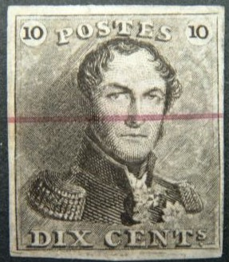
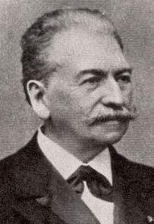
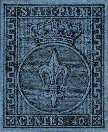
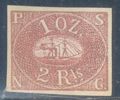
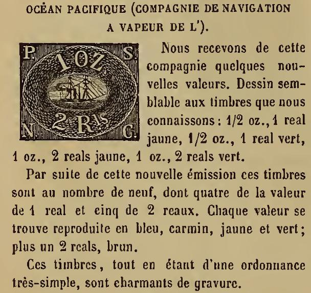
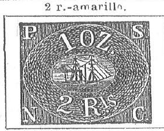

{kind=link}



This red horizontal line was applied by the stamp dealer Moens on reprints (or remainders?).
17 May 1833 (Tournai) - 28 April 1907 (Brussels)
Note: on my website many of the
pictures can not be seen! They are of course present in the
catalogue;
contact me if you want to purchase the catalogue.
Jean-Baptiste Phillipe Constant Moens was a famous Belgian stamp dealer. He published handbooks and 'Le Timbre Poste' (a philatelic journal). Some of the images of his books were used as examples by forgers to make forgeries. Also, the printing blocks, used to make this illustrations, are known to have been misused (by Moens or someone who bought them) to make 'reprints'.

Moens also made large amounts of reprints of Bergedorf and the Papal States.
Some remainders of Belgium 'cancelled' with a red line by Moens.

This red horizontal line was applied by the stamp dealer Moens on
reprints (or remainders?).
Moens reprints of the Papal States:

Moens reprints.
A bogus issue of Moresnet made by Moens;
the design is totally different 10 p black (imperforate or
perforated)
A short history behind the appearance of this stamps can be found at http://web.archive.org/web/20050323024956/student.ulb.ac.be/~charveng/moens/biblio2.htm. Moens, apparently unhappy with the fact that Pierre Mahé of the French journal Timbrohile copied Moens' work in his journal, without proper attribution to the source, published the following 'letter' from Moresnet:
Moresnet, le 1er avril 1867
Cher Monsieur Moens,
Je puis donc à mon tour vous apporter mon contingent de nouvelles et apprendre à vos lecteurs qu’il ya [sic] de par le monde une commune libre de Moresnet, qui vient de révéler son existence par la création de modestes timbres-poste. Ce mode d’affranchissement a été adopté sur la proposition de M. Decrackt, le directeur actuel des postes, et la mise en usage fixée au 15 courant. Il y aura quatre valeurs différentes d’un même type : deux, unicolores, pour la correspondance pour l’Allemagne ; deux, bicolores, pour celle des autres pays. Cette différence d’impression pour bien établir l’usage de ces timbres.
Je joins à cette lettre, une épreuve du 10 centimes imprimée en noir sur carton glacé ; je possède pareillement les autres valeurs. Le dessin représente l’écu de la commune parti de Belgique et de Prusse, sommé du bonnet phrygien de la liberté, posé de côté. Légende : Commune libre de Moresnet ; dans les angles, la valeur en chiffres. […]
Ils sont gravés par MM. De Visch et Lirva, de votre ville, qui se sont chargés en même temps de l’impression, moyennant le prix modique de 75 centimes les mille timbres gommés et piqués. Nous n’avons qu’un seul reproche à formuler contre ces timbres, c’est l’absence de l’énonciation de la valeur. […]
J.S. Néom
This letter describes how a new set of stamps was to be issued in Moresnet. The name 'J.S.Neom' is 'Moens' written backwards. Furthermore the printer 'De Visch et Lirva' can be translated as 'Poisson d'avril' (Visch = fish = Poisson in French). With 'Lirva' the reversed word for 'Avril'; 'Poisson d'Avril' appears, which is the French word for April fool..... The 'joke' worked and this 'newsfact' was straight away taken over by Pierre Mahe in his journal.
A zemstvo 'reprint' of Ryazan:
Forgery (left) based on an illustration of the Moens catalogue
(right) "Les Timbres-Poste Ruraux de Russie" by Samuel
Koprowski (editor J.B.Moens), 1875. In the word 'RYZANSKO' (upper
left), the letters 'R' and '3' are inverted when compared to a
genuine stamp.
First stamp of Brazil 60 r, genuine and forgery. Note that the
'nobs' on the "60" are not well done when compared to a
genuine stamp. This forgery appears to have been based on an
illustration from Le Timbre Poste by Moens of March 1867, No.51,
page 22 (third image). The catalogue of Placido
Ramon de Torres of 1879 also has the same image on page 168.


Forgery in the color red. The second image appears to be a
similar forgery as the red one; on the backside a stamp of
Guatamala is printed! Both sides are shown in the above scan.
Both stamps appear to have been copied or based on an image that
can be found in Le Timbre Poste, No.16, page 28, April 1864 by
Moens. he same image appears once more in the catalogue of Placido Ramon de Torres "Album
Illustrado para Sellos de Correo" of 1879 on page 171
(information passed to me thanks to Gerhard Lang, 2016).

Genuine 10 c first issue of Luxembourg and some primitive
forgeries of the 10 c first issue of Luxemboug in the wrong
colors: green and brown. The magazine Le Timbre Poste by Moens
has this image on page 83 of No.107 (November 1871). This forgery
is identical to the image provided in the John Edward Gray 'The
Illustrated Catalogue of Postage Stamps' of 1870 on page 34 (thus
one year before the appearance of the Moens magazine). The
catalogue of Placido Ramon de Torres
"Album Illustrado para Sellos de Correo" of 1879 also
has the same image (information passed to me thanks to Gerhard
Lang, 2016, last image shown above) on page 89.


Modena 4 Bai forgery of the 4 b in color blue. The '4' has a too
long left part. This forgery is identical to the image provided
in the John Edward Gray 'The Illustrated Catalogue of Postage
Stamps' of 1870 on page 45 (see second image above). In 1872 it
appears again in Le Timbre-Poste by Moens No120, page 92 (third
image above). An image of this forgery can also be found in the
catalogue of Placido Ramon de Torres
"Album Illustrado para Sellos de Correo" of 1879
(information passed to me thanks to Gerhard Lang, 2016) on page
83 (see fourth image).



"PAPM" instead of "PARM" forgeries. The last
images are scanned from Le Timbre Poste by Moens and from Gray
and de Torres catalogues.
Parma, genuine 40 c stamp. In the above forgery (second image) of the 40 c the "A" of "STATI" is too broad and the value "40" doesn't resemble the genuine stamp. Furthermore there is no cross on top of the crown, instead there is a pearl. The bogus 10 c red was probably issued by the same forger. The inscription on top appears to be "STATI PAPM" ("P" instead of "R"). I've also seen the 10 c in the bogus color green. The oldest "PAPM" forgery I have seen is from Moens in his Le Timbre Poste No.129, page 71 from September 1873. This forgery is identical to the image provided in the John Edward Gray 'The Illustrated Catalogue of Postage Stamps' of 1870 on page 40 (see image above). This forgery can also be found in the catalogue of Placido Ramon de Torres of 1879 on page 85 (see last image). Note that there are scratches on the de Torres design, which don't appear on the Gray design or on the forgeries.


Parma second issue 15 c genuine stamp and a 15 c blue stamp,
possibly a proof or more likely a forgery, the design is slightly
different from the genuine stamps. Next to it a similar
forgery(?) in the correct colour red. The leaf patterns at the
left are different and the "C" of "CENT" has
a strange toppart. This forgery type was apparently based on an
illustration in Le Timbre Poste, No 132, page 94 of Moens
(December 1873, see fourth image). This forgery can also be found
in the catalogue of Placido Ramon de Torres
"Album Illustrado para Sellos de Correo" of 1879
(information passed to me thanks to Gerhard Lang, 2016) on page
85 (see last image above).


(Senf forgeries, based on an earlier Moens illustration)
Senf made a forgery of the 5 c yellow stamp (also orange?) of the first issue of Parma. The first image above shows the genuine stamp, the second and third images show the Senf forgeries. This forgery was distributed with stamp journal the 'Illustrierten Briefmarken Journal', No 14 (16 July 1887) as an 'art supplement' or 'Kunstbeigabe'. The forgery always bears the word 'Facsimile' on top. Note the strange "S"s. The third image shows a stamp with the word 'Facsimile' first having been partly erased and then a 'cancel' was applied to the area to hide this word. Apparently, Senf copied the design from an earlier Moens illustration from Les Timbres Poste Illustre of 1864 (by erasing the "1" to make it a 5 c instead of a 15 c; see last image; first stamp).






Two forgeries of the 10 r and 200 r value, apparently made by the
same forger, there is a line in front of the word 'SERVICO' which
does not exist in the genuine stamps. Also the lettering is too
big. I've seen the values 10 r black, 20 r orange, 40 r blue, 100
r green, 200 r yellow and 300 r lilac. Also shown here an
illustration of The Stamp Collector's Magazine of 1872, Vol X
page 72, which should describe the genuine stamp, but actually
shows a forgery. The same image also appears in Moens' Le
Timbre-Poste No112 on page 27. The same image appears in the
catalogue of Placido Ramon de Torres
"Album Illustrado para Sellos de Correo" of 1879, page
131, in a similar design (information passed to me thanks to
Gerhard Lang, 2016).
Literature:
Le Timbre Poste; a stamp journal by Moens issued
from 1863 onwards.
Italian Municipals; Moens, J.B. 1892 (reprinted
in 1994), 80 pages.
Les timbres de Prusse; J.B. Moens, 1887 (can be
visualized with http://www.archive.org)
Postage stamp album; J.B.Moens 1864, (in
English, can be visualized with http://www.archive.org)
http://www.moresnet.nl/english/postverkeer_en.htm
Timbres des Etats de Parme, Modene et Romagne;
Moens, J.B. 1878, 116 pages (can be downloaded with
http://www.archive.org)
Timbres des Duches de Schleswig, Holstein & Lauenburg
et de la Ville de Bergedorf; Moens, J.B. 1884, 102 pages
(http://www.archive.org).
Les Timbres de Natal L.H.J.Walker &
J.B.Moens; 1883, 70 pages (http:/www.archive.org).
Almanach du Timbre-Poste by X.Y.Z. 1886
(supplement to 'Le Timbre Poste'); in this humorous little work
fun is being made of many other stamp dealers that Moens
apparently didn't like.
Stamps - Briefmarken - Timbres-Poste - Postzegels - Francobolli - Estampillas
{kind=link}